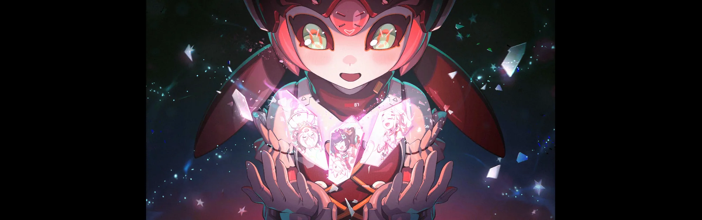

04 / VISUAL EPISODES
THE MOMENTS
BETWEEN FRAMES.
A cinematic archive of key narrative moments, brought together in one uninterrupted viewing space.
FRAMEVERSE CULTURE NETWORK / 2026SCROLL TO EXPLORE ↓

A cinematic archive of key narrative moments, brought together in one uninterrupted viewing space.